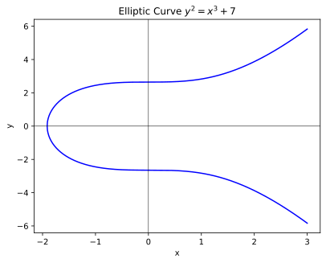
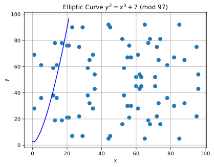
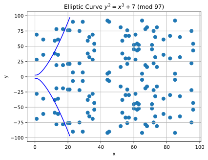
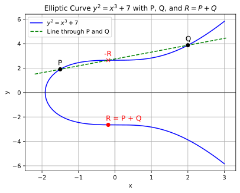
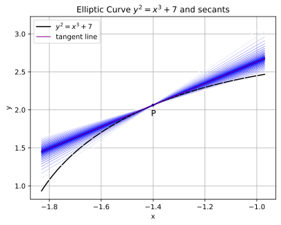
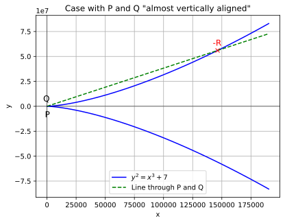
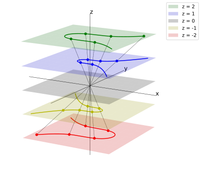

Understanding ECDSA
Prerequisites and audience
In this article, we'll try to understand how ECDSA (Elliptic Curve Digital Signature Algorithm) works.
The version I have in mind is the one used by the Ethereum blockchain. Since my interest lies in security, we'll also explore the signature malleability attack.
I expect you to be familiar with Public Key Cryptography and how it can be used to sign messages, at least conceptually.
You'll only need to know basic math, so abstract algebra is not a requirement. I'll introduce the bare minimum as we go. My exposition will be deliberately unsophisticated, favoring ease of understanding over conciseness and elegance.
The reader I have in mind is someone dissatisfied with the many superficial, hand-wavy explanations of ECDSA often found in articles and books aimed at developers and auditors, but who doesn't have the time or interest to go all the way down the rabbit hole and learn cryptography in a thorough and systematic way.
If you, like me, work in a field where you need to have a working knowledge of multiple disciplines, you'll probably appreciate this kind of compromise.
Finally, this might also serve as an introduction to the topic before you turn to more serious and academic literature.
Not your typical article
You can think of this section as a kind of disclaimer.
This article is the result of an exercise where I start from a vague understanding of a topic and try to connect all the dots and fill in all the gaps on my own, without relying on any external sources of information. This means no books, no LLMs, and no internet.
For the exercise to be effective, it needs to be written with an audience in mind, forcing you to keep track of what you've already explained and what you can expect the reader to know. It also helps you do a better job because you feel more exposed.
Have you ever gone back to something you learned in the past and realized you forgot most of it? Your knowledge has become sparse and all you remember are some facts disconnected from each other.
Can you restore the original picture on your own?
If you succeed, your final understanding will be much deeper than the one you'd have if you relied on external help such as books and notes.
With this article, I go a step further and try to connect the dots with knowledge that I never had to begin with. The fact that it's possible is what makes mathematical topics so special.
That should explain why I wrote it, but why should you read it?
Well, you get to read something:
- Unusual, which might pique your curiosity,
- Non-authoritative, demanding your full attention and critical thinking to spot inconsistencies,
- Constructive in nature, since most of the formulas and derivations have to be recreated from scratch,
- Non-standard, which might or might not please you:
- facts may be stated or named differently from official literature,
- Naive, as I observe and notice some connections for the first time,
- possibly making my exposition more engaging but also less polished,
- Insightful, since I share some of my intuition and mental models, which is somewhat unusual in more rigorous settings.
Your role is that of an auditor or verifier, constantly trying to find any inconsistencies and non sequiturs in what I produced: I'm the generator and you the discriminator. In a (constructively) adversarial setting, this would be an iterative process.
It goes without saying that this article is meant to be read linearly, from the start.
Modular arithmetic
It's all around us:
| Mon | Tue | Wed | Thu | Fri | Sat | Sun |
|---|---|---|---|---|---|---|
| 1 | 2 | 3 | 4 | 5 | 6 | |
| 7 | 8 | 9 | 10 | 11 | 12 | 13 |
| 14 | 15 | 16 | 17 | 18 | 19 | 20 |
| 21 | 22 | 23 | 24 | 25 | 26 | 27 |
| 28 | 29 | 30 | 31 |
If we're just interested in the day of the week, then the numbers in the same column are equivalent. What do they have in common? The fact that the difference between any two of them is always a multiple of \(7\):
- \(29-8 = 21 = 3\cdot 7\)
- \(22-15 = 7\)
- \(31-17 = 14 = 2\cdot 7\)
Since numbers in the same column are equivalent, we can represent all of them by the smallest one. Let's call it the representative of the column. If we do that, we end up with \(7\) numbers:
| Mon | Tue | Wed | Thu | Fri | Sat | Sun |
|---|---|---|---|---|---|---|
| 0 | 1 | 2 | 3 | 4 | 5 | 6 |
That's not ideal for a calendar, but it makes sense: we just add multiples of \(7\) to the starting numbers to recover the missing ones.
How do we get the representative from a number? For instance, what's the representative of \(45\)? Well, \(45 = 3 + 7\cdot 6\), so the representative is \(3\). Indeed, starting from \(3\), we add a multiple of \(7\) to get \(45\).
Now what's \(3\) with respect to \(45\)? It's the remainder of \(45\) divided by \(7\). We can get that number by using the mod(ulo) operator: \(45\ \mathrm{mod}\ 7 = 3\), or 45 % 7 == 3, in many programming languages.
Beware:
- In JS:
-45 % 7is \(-3\) - In Solidity:
-45 % 7is \(-3\) - In Python:
-45 % 7is \(4\) - In Math: \(-45\ \mathrm{mod}\ 7\) is \(4\)
Both values make sense, since they're separated by \(7\) and, thus, in the same column, or equivalence class, i.e. the class of all equivalent elements. But we want the representative, so \(4\) is preferred. Observe that \(-45 = -7\cdot 7 + 4\).
Basically, any time we're outside the window \(\{0, \ldots, 6\}\), we add or subtract \(7\) as many times as we need to land in the window.
Note that ((n % 7) + 7) % 7 will give the representative in any language, since:
n % 7is in \(\{-6, -5, \ldots, 0, \ldots, 5, 6\}\)(n % 7) + 7is in \(\{1, \ldots, 13\}\)((n % 7) + 7) % 7is in \(\{0, \ldots, 6\}\)
Observe that:
- adding \(7\) doesn't change the equivalence class
(x % 7) % 7is justx % 7. This property is called idempotency (same power): reapplying the operation doesn't increase the extent of the effect, i.e. it gives the same result.
Instead of writing mod operators everywhere, we can say that we're computing mod \(p\):
That's equivalent to
which is a pain to write.
If we're only dealing with addition and multiplication, then we can insert as many "mod \(p\)" as we want wherever we want, so these two expressions are equivalent:
- \((123456 \cdot 345678 + 876876234)\ \mathrm{mod}\ p\)
- \([(((123456\ \mathrm{mod}\ p)\cdot (345678 \ \mathrm{mod}\ p))\ \mathrm{mod}\ p) + (876876234\ \mathrm{mod}\ p)]\ \mathrm{mod}\ p\)
That's not true for exponentiation:
- \(2^8\ \mathrm{mod}\ 7 = 4\)
- \(2^{8\ \mathrm{mod}\ 7} = 2^1 = 2\)
ECDSA doesn't rely on exponentiation, so we don't need to talk about it.
We still don't know how to divide mod \(p\). That is, we don't know how to compute, say, \(3/4\) mod \(p\), or whether it even exists.
What does dividing by \(4\) do? It does something that can be reversed by multiplying by \(4\). So the two operations cancel out and are equivalent to multiplying by \(1\), the neutral element. In other words, we must have
That's usually written as
where \(a^{-1}\) is called the multiplicative inverse of \(a\).
As an aside, the additive inverse, or opposite, is simply \(-n\), since \(n + (-n) = 0\), where \(0\) is the neutral element of addition. Of course, we can compute \(-n\ \mathrm{mod}\ p\) to get the representative of \(-n\).
Let's find \(x\) such that \(4\cdot x = 1\ (\mathrm{mod}\ 7)\) by using simple brute force:
- \(4\cdot 0 = 0\)
- \(4\cdot 1 = 4\)
- \(4\cdot 2 = 1\)
- \(4\cdot 3 = 5\)
- \(4\cdot 4 = 2\)
- \(4\cdot 5 = 6\)
- \(4\cdot 6 = 3\)
I omitted "\(\left(\mathrm{mod}\ 7\right)\)" for convenience. I'll do that often from now on.
As we can see, \(4^{-1} = 2\). That's because \(4\cdot 2 = 8 = 8-7 = 1\).
Let's go back to our \(3/4\):
Indeed:
so we get \(3\) back.
An important fact to know is that a number \(a\) is always invertible mod \(p\), as long as it's coprime with \(p\), i.e. their GCD (greatest common divisor) is \(1\).
Proof (safely skippable)
Let's define \(r_x = a\cdot x\ \mathrm{mod}\ p\). Let \(r\) be the sequence \(r_0, \ldots, r_{p-1}\).
Again, I'll omit "mod \(p\)" for notational convenience.
If \(r_x = r_y\), i.e. \(a\cdot x = a\cdot y\), then \(a(x-y) = 0\), which means that \(a(x-y)\) is divisible by \(p\). If \(a\) and \(p\) are coprime, then \(x-y\) must be divisible by \(p\), so \(x-y = 0\), i.e. \(x=y\). In other words, \(x\neq y\) implies that \(r_x \neq r_y\).
This means that \(r\) has \(p\) distinct values in \(\{0, \ldots, p-1\}\), i.e. \(r\) is a permutation of the sequence \(0, \ldots, p-1\). In particular, \(r\) contains exactly one \(1\), so there's exactly one \(x\) such that \(a\cdot x = 1\).
End of proof!
As an example, let's look again at the brute-forcing we did above to find \(4^{-1}\ \mathrm{mod}\ 7\) and note that the results are a permutation of the numbers from \(0\) to \(6\), so they contain exactly one \(1\). That's expected since \(4\) and \(7\) are coprime.
Observe that when \(p\) is prime, all numbers from \(1\) to \(p-1\) are coprime with it, so they're all invertible.
Technically, the set of representatives \(0, \ldots, p-1\) is often denoted by \(\mathbb{Z}_p\) or \(\mathbb{Z}/p\mathbb{Z}\). It's obtained by partitioning the integers into equivalence classes (our calendar columns, but extended to all integers) and representing each class by a representative in \(\{0, \ldots, p-1\}\). That's what we did informally.
Extended Euclidean algorithm
Tip
You can safely skip this section, if you already know or don't care about how the multiplicative inverse can be computed in practice. If you're interested in the method of generating functions you might still want to read the Fibonacci numbers subsection, though.
For a fast and practical way to compute the multiplicative inverse, we can use the extended Euclidean algorithm (EEA).
The Euclidean algorithm (EA) can be used to efficiently compute \(\mathrm{GCD}(a, p)\), and its extended version returns two integers \(x\) and \(y\) such that
If \(a\) and \(p\) are coprime, then
This means that \(x\) is the multiplicative inverse of \(a\) mod \(p\).
How does the algorithm work? It's very simple.
The first observation is that
and, by symmetry,
We will prove this later.
Since we can subtract repeatedly, we can also use the mod operator:
This way, we can reduce the two arguments very quickly. Note that in a real implementation we only need one mod per step, since one of the two has clearly no effect.
Let's use it to compute \(\mathrm{GCD}(784, 495)\):
The second column shows how we got the new values. Since we obtained \(\mathrm{GCD}(3, 1)\), the GCD is \(1\), i.e. \(784\) and \(495\) are coprime.
The extended version of the algorithm uses the second column in a simple way. To start, we notice that the equation at the bottom of the second column is already in the right form, i.e.
However, we want the expression with respect to the initial values \(784\) and \(495\).
The solution is easy: we just do substitutions as we go up the second column, starting from the bottom:
Indeed, \(495\cdot 255 - 784\cdot 161 = 1\).
So now we know that \(495\cdot 255 = 1\ (\mathrm{mod}\ 784)\).
Now, the only thing missing is to prove that
Let me write \(a|b\) to mean that \(a\) divides \(b\), i.e. \(b = ah\) for some integer \(h\).
If two numbers divide each other, they must be equal, so we just need to prove that, for any integer \(k\),
Indeed, we can then argue that:
- \(\mathrm{GCD}(a, b) \mid \mathrm{GCD}(a, b-a)\)
- \(\mathrm{GCD}(a, b-a) \mid \mathrm{GCD}(a, (b-a)+a)\)
Let's prove that
Let \(d_1\) be the GCD on the left and \(d_2\) the one on the right. It's clear that \(d_1|u\) and \(d_1|v\), which implies that \(d_1|(v+ku)\). Now we'd like to conclude that \(d_1|d_2\).
Unfortunately, we only proved that \(d_1\) is a common divisor of \(u\) and \(v+ku\) so far.
Let's show that if \(d'\) divides both \(a\) and \(b\), then it also divides \(d = \mathrm{GCD}(a,b)\).
Proof (safely skippable)
We can always express \(d\) and \(d'\) as
where, as indicated, \(u\) and \(v\) are coprime.
Observe that if \(u\) and \(v\) weren't coprime, their common divisor would be absorbed by \(\mathrm{GCD}(d, d')\), so we'd have the same situation as above but for \(u'=u/\mathrm{GCD}(u,v)\) and \(v'=v/\mathrm{GCD}(u,v)\).
Since \(a\) and \(b\) are divisible by both \(d'\) and \(d\), then \(a' = a/\mathrm{GCD}(d, d')\) and \(b' = b/\mathrm{GCD}(d, d')\) must still be divisible by \(u\) and \(v\). So:
- \(u k_1 = a' = v k_2\)
- \(u h_1 = b' = v h_2\)
for some integers \(k_1\), \(k_2\), \(h_1\), and \(h_2\).
Since \(u\) and \(v\) are coprime, then \(u|k_2\) and \(u|h_2\), i.e. \(k_2 = u k_3\) and \(h_2 = u h_3\) for some integers \(k_3\) and \(h_3\). Therefore:
- \(a' = uv k_3\implies a = uv \mathrm{GCD}(d, d') k_3 = ud k_3\)
- \(b' = uv h_3\implies b = uv \mathrm{GCD}(d, d') h_3 = ud h_3\)
This means that \(ud\) is a common divisor of \(a\) and \(b\), and \(u>1\) would imply that we found a greater divisor than \(d\), their GCD.
Since \(u = 1\), then \(d' = \mathrm{GCD}(d, d')\), i.e. \(d'|d\).
End of proof!
I seem to recall that some people include this property in the definition of the GCD itself, but I think that's slightly redundant.
Anyway, we're done!
Wait! How fast is this algorithm? Let's look at the reduction again:
I can see two super Fibonacci sequences. Here's the green one:
| Green Seq. | 1 | 3 | 40 | 83 | 206 | 289 | 495 |
| Green Mult. | 0 | 13 | 2 | 2 | 1 | 1 | 1 |
Fibonacci numbers form a sequence \(F_0, F_1, F_2, \ldots\) where the recurrence relation is \(F_i=F_{i-2}+F_{i-1}\), for \(i=2, 3, \ldots\).
In our case, however, the recurrence relation is \(F_i = F_{i-2}+F_{i-1}\cdot M_{i-1}\), where \(F\) is on the first row and \(M\) on the second row of the table.
As an example, I highlighted 4 elements in the table: \(206 = 40 + 83\cdot 2\). I call this a super Fibonacci sequence because the multipliers make it grow faster than the regular one (corresponding to all \(M_i=1\)).
Fibonacci numbers grow exponentially, so the number of steps necessary to reach a number \(n\) is \(\Theta(\log n)\).
Since our sequence is even faster, the number of steps is lower and all we can say for now is that the worst-case complexity of EEA is \(O(\log n)\).
Note
Technically, \(\Theta\) denotes exact growth, \(O\) denotes an upper bound, and \(\Omega\) denotes a lower bound.
For instance, \(n = O(n^2)\) is correct, though in practice people often use \(O\) when they really mean \(\Theta\).
Moreover, \(n = O(n^2)\) really means \(n \in O(n^2)\), but the former notation is more common than the latter.
Can we think of a very slow sequence? But, of course! We can build it starting from the bottom and always choosing \(M_i=1\):
Those are basically two Fibonacci sequences! This tells us that the worst case of the EEA is indeed logarithmic or, to be precise, \(\Theta(\log (\min\{a, b\}))\). Why min? Because we have two sequences: the green and the red one. Since they start and end together, the faster one dominates the other and faster growth means shorter sequence, so the time complexity is \(\Theta(\min\{\log a, \log b\})\), i.e. \(\Theta(\log (\min\{a, b\}))\).
I had no idea that the EA had such a connection with the Fibonacci numbers before writing this section. As always, check my reasoning!
Fibonacci numbers
Tip
You can safely skip this section. You don't need it for the rest of the article, but if you want to learn about generating functions, I think this is a good opportunity.
I want to find the base for the logarithm that appears in the time complexity of the EA and EEA algorithms.
If we assume that Fibonacci numbers grow exponentially, i.e. \(F_i\sim b^i\), then:
We divide by \(b^i\) and get \(b^2-b-1 = 0\), whose positive solution is
That's the well-known golden ratio.
We started from the assumption that the growth is exponential, but what's the exact expression for the \(n\)-th Fibonacci number, just to make sure we're correct?
Let \(V_0\) be the vector of Fibonacci numbers \(F_i\):
| \(V_0:\) | \(F_0\) | \(F_1\) | \(F_2\) | \(F_3\) | \(F_4\) | \(F_5\) | \(F_6\) | \(\ldots\) |
Now let's introduce the two shifted versions \(V_1\) and \(V_2\):
| \(V_0:\) | \(F_0\) | \(F_1\) | \(F_2\) | \(F_3\) | \(F_4\) | \(F_5\) | \(F_6\) | \(\ldots\) |
| \(V_1:\) | \(F_0\) | \(F_1\) | \(F_2\) | \(F_3\) | \(F_4\) | \(F_5\) | \(\ldots\) | |
| \(V_2:\) | \(F_0\) | \(F_1\) | \(F_2\) | \(F_3\) | \(F_4\) | \(\ldots\) |
We can see that, from the third column onward, \(V_0 = V_1 + V_2\), because of the relation \(F_{i+2} = F_{i+1} + F_{i}\).
The advantage of the vector approach is that we don't have to deal with the index \(i\) anymore. In a sense, we vectorized the loop and abstracted away the annoying index. The drawback is that we lost some algebraic power because, unless we introduce other operations, we don't even know how to express the fact that \(V_1\) is a shifted version of \(V_0\).
Instead of reinventing the wheel, why don't we use a power series instead of a simple vector? I'm thinking of something like this:
The individual elements are kept separated thanks to the different powers of \(x\), and we inherit lots of algebraic properties from power series!
For instance, it's easy to see that \(P_1(x) = x P_0(x)\) and \(P_2(x) = x^2 P_0(x)\).
Moreover, we can state algebraically what we observed before:
We can see that, from the third column onward, \(V_0 = V_1 + V_2\), because of the relation \(F_{i+2} = F_{i+1} + F_{i}\).
With power series, that becomes
Note that we simply removed the unwanted terms in the first two columns:
To reiterate, we expressed all the following relations at once:
- \(F_2 = F_1 + F_0\)
- \(F_3 = F_2 + F_1\)
- \(F_4 = F_3 + F_2\)
- \(\ldots\)
We can now express \(P_1\) and \(P_2\) in terms of \(P_0\). For convenience, let's write \(P\) instead of \(P_0(x)\):
Now we solve for \(P\):
Since Fibonacci numbers start with \(0\) and \(1\), let's substitute \(F_0=0\) and \(F_1=1\):
That's in implicit form. If we can put \(P\) in explicit form, then we can read the expression for the generic coefficient of \(x^i\), which, by construction, is the \(i\)-th Fibonacci number! Here's the form we want:
The coefficient \(\alpha_i\) is bound to be a general expression for \(F_i\).
How do we do that?
Let's take the simplest power series we can think of and find both the explicit and implicit forms for it:
We can use the same trick, i.e. the shift:
Maybe surprisingly:
Written more formally, we proved that
We don't care about convergence, as we only want to read the coefficients of the series. As long as what we do is algebraically correct, we should be fine. We might say that we're repurposing some algebraic machinery to do "something else".
Note
We say a series converges if it evaluates to a real number. Otherwise, we say it diverges. For instance, the following series clearly converges: $$ \sum_{i=0}^\infty \left(\frac{1}{10}\right)^i = 1 + 0.1 + 0.01 + \ldots = 1.1111\ldots $$
In the Fibonacci case, we want to find \(\alpha_i\) such that
Now that we've witnessed how the simple case works, we should have more confidence that this method might just work! It might still look like magic, though.
How do we close the gap between the simple case and the Fibonacci case?
First, we notice that the denominator is factorizable:
where
These are the same solutions we found for \(b\) at the start of this section, but multiplied by \(-1\).
Now we can split the expression into two simpler ones:
We just need to find the appropriate \(A\) and \(B\) to get \(-x\) at the numerator:
We want \(-x = x(A+B) - c_2 A - c_1 B\), so we must have
The solutions are
Therefore:
If we can convert each of the two parts into explicit form, then we're done, since explicit forms sum nicely: we just sum the corresponding coefficients.
Now we divide numerator and denominator of the left part by \(c_1\) and of the right part by \(c_2\):
We change some signs:
Success:
Expanding and simplifying:
We can simplify it further, since \(c_1 c_2 = -1\) and \(c_1 - c_2 = \sqrt5\):
At last:
with
Let's check this with the simplest and dumbest Python code possible:
from math import sqrt
s5 = sqrt(5)
c1 = (-1 + s5) / 2
c2 = (-1 - s5) / 2
def fib(i):
return (-1)**i * (c2**i - c1**i)/s5
[int(fib(i)) for i in range(20)]
Fingers crossed:
Phew...
If we substitute \(c_1\) and \(c_2\) in the formula, we get
We obtained the same solutions we found for \(b\), and we get the same asymptotic growth as well.
Indeed, the numerator grows as \((1+\sqrt5)^i\):
So, \(F_i \sim \frac{\phi^i}{\sqrt5} = \Theta(\phi^i)\), where \(\phi = \frac{1+\sqrt5}{2}\).
By the way, \(P(x) = \sum_{i=0}^\infty F_i x^i\) is called a generating function.
secp256k1
Ethereum's ECDSA uses the elliptic curve secp256k1, defined as
where \(p\) is a very big prime number.
Here's what the continuous version (i.e. without mod) of the curve looks like:

The continuous elliptic curve is the set of all points \((x, y)\) in the plane such that \(y^2 = x^3 + 7\). Because \(y\) is squared, the curve is symmetric about the X-axis, i.e. \((x, y)\) is on the curve if and only if \((x, -y)\) is.
When we switch to mod \(p\), things get complicated:

To draw that picture I used \(p = 97\), a small prime. The blue line is the continuous curve, while the dots are the solutions in \(\mathbb{Z}_p\times\mathbb{Z}_p\). Note that those solutions must always be finitely many, since they lie on a \(p\times p\) grid.
This figure only shows the upper right part (1st quadrant) of the previous one, so we can't see the symmetry of the continuous curve. Yet, the points in \(\mathbb{Z}_p\times\mathbb{Z}_p\) show a new symmetry: they're reflected across the horizontal line \(y = p/2\). That makes sense:
- \((x, y)\) lies on the continuous curve if and only if \((x, -y)\) also lies on it.
- If \(y\in\mathbb{Z}_p\), then \(-y = p-y\).
- This means that \((x, y)\) lies on the mod curve if and only if \((x, p-y)\) also lies on it.
- \(y = p-y\) gives us \(y = p/2\). In the figure the axis of symmetry is \(y = 97/2 = 48.5\).
Let's plot the negative solutions as well:

As we can see, the part above is identical to the part below, since adding \(p\) or \(-p\) to a coordinate doesn't change anything mod \(p\).
Group
A group \(G\) is a set of elements equipped with a binary operation, \(+\), such that:
- For any elements \(a, b\in G\), we must have \(a+b \in G\).
- There's a neutral element, or identity, \(0\), so that \(a+0 = 0+a = a\) for every \(a\in G\).
- For every \(a\in G\), there exists an additive inverse, or opposite, of \(a\), denoted as \(-a\), such that \(a+(-a) = (-a)+a = 0\).
- Note: \(a+(-b)\) can also be written as \(a-b\).
- We also want associativity, i.e., for all \(a,b,c\in G\), we must have \(a + (b+c) = (a+b) + c\). So, we can drop the parentheses and write \(a+b+c\).
If for all \(a, b\in G\) we have \(a+b = b+a\), then \(G\) is abelian or commutative.
Notice that we can't have two distinct identities \(0_1 \neq 0_2\), since
Let's break it down:
- \(0_1+0_2\) can be simplified in two ways:
- Since \(0_1\) is an identity, then it disappears, so \(0_1+0_2 = 0_2\)
- Since \(0_2\) is an identity, then it disappears, so \(0_1+0_2 = 0_1\)
Therefore, the two identities must be equal.
The same goes for the additive inverse. If \(x\) and \(y\) are opposites of \(a\) then:
That means that:
So there's only one inverse per element.
Given a subset \(S\) of elements from \(G\), we can define the subgroup \(G_S\) of \(G\) generated by \(S\) as the smallest group that includes all the elements of \(S\). We say that \(S\) is a generator of \(G_S\).
In this article we'll only describe in detail the case where \(S\) has just one element. For simplicity, we'll use the same symbol for the subgroup and its generator, so a generator \(G\) generates the (sub)group \(G\) defined as follows:
That's very cumbersome to read and write, so let's define
Now we can rewrite the definition as
or even
where we define \(0G = 0\).
A group for the elliptic curve
ECDSA defines a group over the points on the curve mod \(p\). To do that, we first need to define an addition between points.
Here's how it's done on the continuous version of the elliptic curve:

If \(P\) and \(Q\) are two points on the curve, then \(P+Q\) is the reflection across the X-axis of the intersection between the curve and the line passing through \(P\) and \(Q\).
The line through \(P\) and \(Q\) always intersects the curve at a third point, except when the line is perfectly vertical. In that case, the line is said to intersect the curve at \(0\), called the point at infinity. The point \(0\) acts as the identity, but is not really part of the curve, so it needs to be handled as a special case.
Now, observe that the line through \(R = (x, y)\) and \(-R = (x, -y)\) is vertical, so \(R+(-R)=0\), as suggested by the "\(-\)" sign.
Note
Usually, the point at infinity is denoted by \(\mathcal{O}\) and the origin by \(0 = (0, 0)\). However, since we have no need for the origin in this context, we'll denote the point at infinity by \(0\), stressing the fact that it's the zero of the group.
When \(P = Q\), the line through \(P\) and \(Q\) is taken to be the tangent to the curve at \(P\) (or, equivalently, \(Q\)). It makes sense:
- Just imagine fixing \(P\) and sliding \(Q\) along the curve from one side of \(P\) to the other.
- If we want the animation of the line during the sliding to be continuous, the line must be the tangent when \(P = Q\).
After all, the animation is continuous when the slope of the line is continuous, and the slope is continuous at a point when it's equal to its limit, i.e. the derivative, at that point.
Here's a figure with a fixed point \(P\) and secants through \(P\) and several \(Q_i\) points that converge to \(P\). I chose a color map such that the closer a \(Q_i\) is to \(P\), the bluer the secant through it becomes.

By the way, we still count the tangent line as intersecting the elliptic curve in three points, with two coinciding at the point of tangency.
But how is it possible that even an "almost vertical" line through two points on the curve always intersects the curve at a third point? Such a line intersects the curve either at a point towards \((+\infty, +\infty)\) or \((+\infty, -\infty)\).
For \(x\to+\infty\):
- line:
- \(y = mx + q \sim mx\)
- curve:
- \(y^2 = x^3 + 7 \sim x^3 \implies\)
- \(y \sim x^{3/2}\) (upper branch)
- \(y \sim -x^{3/2}\) (lower branch)
- \(y^2 = x^3 + 7 \sim x^3 \implies\)
What we're saying is that when \(x\) becomes very big, additive terms such as \(q\) and \(7\) are dwarfed and can be ignored, so the line grows like \(mx\), while the curve grows like \(x^{3/2}\). The curve grows asymptotically faster, so, when \(m > 0\), the upper branch of the curve will hit the line from below and cross it sooner or later. Similarly, when \(m < 0\), the lower branch of the curve will hit the line from above and cross it.
Here's a visual example for \(m>0\):

Finding the intersection point
The algebra is easy enough. We just compute the intersection between the curve and the line. Let's start from the two points \(P = (x_P, y_P)\) and \(Q = (x_Q, y_Q)\).
If the line is vertical, the third intersection point is \(0\). Otherwise, its equation has the form \(y = mx + q\), where
We need to solve for \(x\) and \(y\) the system
We substitute the first equation into the second and get
Before giving in to despair, we remember that we already know two solutions, \(x_P\) and \(x_Q\), and we're looking for the third point \(-R = (x_{-R}, y_{-R})\). This means that the LHS of the equation in \(x\) must be factorizable as
Let's expand it to get
The second term is all we need: for the two LHS to be equal, we must have
The \(y\) coordinate is simply \(y_{-R} = m x_{-R} + q\).
Therefore, the sum of the two points can be computed as
As we can see, finding the sum of two points requires subtractions, multiplications, and one division to compute \(m\). To sum two points on the curve mod \(p\), we just need to do the calculations mod \(p\). We know how to "divide" mod \(p\), so we're good.
Let's briefly go through the case with \(P=Q=(x,y)\). Recall that we need to consider the tangent to the curve at \((x,y)\). Note that for \(y=0\) the tangent is perfectly vertical, so the result is \(0\) (look at the figure). For \(y\neq 0\), we need to compute the derivative.
We start from the equation
and derive both sides with respect to \(x\):
We solve for the derivative:
That's our \(m\).
A complete implementation will also handle the (trivial) edge cases with \(P=0\) or \(Q=0\), of course.
Why reflect the intersection point
Having to reflect the intersection point might seem a little arbitrary at first, but if we think about it, not reflecting it is problematic. Indeed, since the three points lie on the same line, without reflection all the following equations would hold:
- \(P + Q = R\)
- \(P + R = Q\)
- \(Q + R = P\)
By summing the first two equations, we'd get \(2P+Q+R=R+Q\), i.e. \(P=0\). Analogously, by summing the last two equations, we'd get \(R=0\). Since \(P=Q=R=0\), that rule would only work for \(0\).
The correct rule will look less asymmetric if we think of it as \(P+Q+R=0\), which gives
- \(P+Q=-R\)
- \(P+R=-Q\)
- \(Q+R=-P\)
But what about this point at infinity? Where does it come from? All I know is that it has to do with the so-called projective space.
I got somewhat acquainted with that space when I was doing 3D graphics. In 3D, we may add a 4th coordinate, so that \((x, y, z)\) is represented by \((wx, wy, wz, w)\) and some computations become more regular (i.e. with fewer exceptions). At the end, we divide by \(w\) to go back to the usual coordinates.
There's also the 2D case when we project a 3D scene onto a 2D screen: \(\pi(x, y, z) = (x/z, y/z)\), where I used \(\pi\) for projection. This has to do with how we perceive the world, so that the farther an object is from us, the smaller it looks (assuming, from our POV, that \(z\) is the distance of the object from us).
Projective space
Let's say we have some 3D space. We make it projective by imposing that, in general, \((x, y, z) \sim (\lambda x, \lambda y, \lambda z)\) for all \(\lambda\neq 0\), and \((x, y, z)\neq(0, 0, 0)\), where \(\sim\) means equivalent. In words, all non-zero scalings of a non-zero point are equivalent. Those are all the points, origin excluded, on the same line through the origin.
The classes partition the punctured (i.e. without the origin) 3D space. The origin, if included, would be in its own singleton class \(\{0\}\) anyway. If we instead allowed \(\lambda = 0\), then two points \(x\) and \(y\) on different lines through the origin would violate the equivalence relation: \(x\sim 0\) and \(y\sim 0\), but \(x\nsim y\).
Indeed, an equivalence relation must follow three rules:
- reflexivity: \(x\sim x\)
- symmetry: \(x\sim y\iff y\sim x\)
- transitivity: \(x\sim y \wedge y\sim z\implies x\sim z\)
where "\(\wedge\)" means "and".
To remember the rules, we can just think of equality, which is also an equivalence relation:
- \(a=a\)
- \(a=b\iff b=a\)
- \(a=b\wedge b=c\implies a=c\)
So, if \(x\sim 0\) and \(0\sim y\), then we must have \(x\sim y\). If \(0\) is equivalent to elements that belong to different classes, then it breaks transitivity.
Since the origin doesn't belong to the projective space, any generic point \((x, y, z)\) in it is to be considered non-zero.
Back to our elliptic equation. On the 2D plane, the equation is \(y^2 = x^3 + 7\), but that won't work in the projective space. Since \((x, y, z)\sim (\lambda x, \lambda y, \lambda z)\), with \(\lambda\neq 0\), we'd like for \((\lambda x, \lambda y, \lambda z)\) to be on the curve whenever \((x, y, z)\) is.
Let's write the equation in the projective space as
and do the substitution \((X, Y, Z) = (\lambda x, \lambda y, \lambda z)\):
We want that to hold whenever \((x, y, z)\) is a solution, i.e. whenever \(y^2 = x^3 + 7\). For that to happen, the equation must factorize as
so that when the second factor is \(0\), the equation holds regardless of the factor with \(\lambda\).
We still have a \(Z\) to add, so why not use it to balance the degree of the terms? That is:
Now the substitution gives
We did it, but what about that annoying extra \(z\)? If we want to recover the original equation, we need to set \(z=1\), i.e. we need to restrict ourselves to \((x, y, 1)\).
That's perfectly fine, though: the original curve lies on the \(z=1\) plane, while on each \(z=\lambda\) plane, with \(\lambda\neq 0\), lies a \(\lambda\)-scaled version of the original curve:

With this setup, we can say that either all the elements of an equivalence class (a punctured line through the origin) are on the curve or none of them are.
There's actually an easier way to get the equation in \(x\), \(y\), and \(z\) coordinates. The original 2D curve is embedded in the 3D space by adding a \(z = 1\) coordinate, i.e.
Starting from a generic point \((X, Y, Z)\) with \(Z\neq 0\), we can go back to the 2D case by just dividing by \(Z\) and dropping the third coordinate, i.e.
Now, let's substitute \(x = X/Z\) and \(y = Y/Z\) into the starting equation and get rid of the denominators:
One can also apply other projections. For instance, \(x = X/Z^2\) and \(y = Y/Z^3\) lead to
This is actually nicer and used to greatly speed up computations. It's called Jacobian projection.
We still haven't solved the mystery of the point at infinity. That was the main reason why we decided to explore projective spaces.
Point at infinity
We know that a vertical line intersects the planar elliptic curve either at no points at all or at the points \(P\), \(-P\), and \(0\) for some point \(P\), where \(0\) is the so-called point at infinity. Let's try to make sense of it.
On the plane, a vertical line has equation \(x = k\), but in our projective space that's the equation of a plane. Like with the elliptic curve, we want to upgrade the equation so that if \((x, y, z)\) is on the line, then so is \((\lambda x, \lambda y, \lambda z)\). We use the same substitution as before:
So the equation of the vertical plane becomes \(X = kZ\), which represents a family of \(Z\)-scaled vertical lines. The equation \(X = kZ\) makes sense since, as \(Z\) gets closer to \(0\), the line must also get closer to the origin because everything, curve included, gets scaled down.
Let's find the intersections between the curve and the line by solving
We substitute the second equation into the first:
That can be rewritten as
For \(Z\neq 0\), we can divide by \(Z\), so we're left with
which gives two solutions for each \(Z\neq 0\) because of that \(Y^2\). Those two solutions correspond to two points \(P\) and \(-P\).
For \(Z = 0\), we get \(X = 0\) from the second equation, i.e. the solutions are \((0, \lambda, 0)\) for \(\lambda\neq 0\), which is the Y-axis without the origin. We can take \((0, 1, 0)\) as the representative of that class, which is exactly the point at infinity. As we can see, it doesn't live in any plane with the curve, so it doesn't exist in our original 2D space, but we already knew that.
This reminded me that we never designated representatives for the equivalence classes. Let's see:
- Each class \(C\) is a punctured line through the origin.
- If \(C\) intersects the plane \(Z = 1\) at some point \(P = (X, Y, 1)\):
- \(\mathrm{repr}(C) = P\)
- Else:
- \(C\) must lie on the plane \(Z = 0.\)
- If \(C\) intersects the line \(\{Y=1; Z=0\}\) at some point \(P = (X, 1, 0)\):
- \(\mathrm{repr}(C) = P\)
- Else:
- \(C\) lies on the X-axis, i.e. \(\{Y = Z = 0\}\).
- \(C\) has the form \((X, 0, 0)\).
- \(\mathrm{repr}(C) = (1, 0, 0)\)
So, we have three groups of representatives:
- \((X, Y, 1)\): on the curve if and only if \(Y^2 = X^3 + 7\).
- \((X, 1, 0)\): on the curve if and only if \(X = 0\), which gives the point at infinity \((0, 1, 0)\).
- \((1, 0, 0)\): not on the curve.
Addition in projective space
Tip
You can safely skip this section!
Computing \(m\), the slope of the line through the points \((x_1, y_1)\) and \((x_2, y_2)\), requires a division, which, mod \(p\), is a relatively expensive operation (compared to simple additions and multiplications).
Let's recall how to compute the point \((x_3, y_3) = (x_1, y_1) + (x_2, y_2)\), assuming \(x_1\neq x_2\):
To go from the plane to the 3D projective space, we proceed as we did before with the elliptic curve and the line equations, i.e. we make the substitution \((x,y) = (X/Z, Y/Z)\).
Let's start with \(m\):
We define
Therefore:
Now we deal with \(x_3\):
It's \(y_3\)'s turn:
We substituted \(X_3\) into \(Y_3\), so we could factor out \(Z_3\), since \(X_3 = Z_3 (\ldots)\).
We end up with
and by choosing \(Z_3 = D^3 Z_1 Z_2\), we get rid of the denominators:
We can clean that up further by defining
which results in
Note that further micro-optimizations are possible. For instance, we shouldn't compute \(D^2\) and \(D^3\) separately.
I hope my calculations are correct, since this is my first time doing them. Either way, I'm satisfied with the result from a pedagogical point of view. I hope you are as well. As we can see, the common denominator was put in \(Z_3\) to avoid intermediate divisions. Now we can add many points together without any division and only do one single division when we want to go back to our 2D plane:
That's one slow (at least in \(\mathbb{Z}_p\)) division and 2 fast multiplications.
Note that the \(P=Q\) case is handled similarly. Moreover, the same approach will also work for the Jacobian projection, i.e. for \((x, y) = (X/Z^2, Y/Z^3)\).
This is almost a philosophical observation. When we substitute \(x\) with \(X/Z\), we're not promoting \(x\) to a fraction, but we're reexpressing it as a fraction, since they're assumed to be equal.
For example, if \(x\) is a simple integer in \(\mathbb{Z}\) (without mod) and we replace it with \(X/Z\) where \(X\) and \(Z\) are also in \(\mathbb{Z}\), then we're ranking up from integers to rational numbers, which is a promotion. Indeed, unless \(X\) is divisible by \(Z\) or we're willing to lose some information, we won't be able to go back to \(x\) when the time comes.
In the ECDSA case, though, \(x\) is in \(\mathbb{Z}_p\), with \(p\) prime, so \(X/Z\) is also in \(\mathbb{Z}_p\): we're not promoting \(x\) to something more, but just reexpressing it.
Let's say we have a huge matrix that can be factorized into two small matrices because it's low-rank (i.e. many of its rows or columns are linear combinations of a selected few). Instead of carrying around the huge matrix during the computations, we may want to keep it in factorized form, \((L, R)\), and then update the factorized form itself:
One way to find \(f\) and \(g\) is to do the substitution \(M = LR\) into whatever expression we want to evaluate involving \(M\), and put the result back into factorized form. Note that if we end up with \(L=I\) or \(R=I\) (where \(I\) is the identity matrix), then the factorization is useless for our purposes.
Back to the group
ECDSA uses the addition operation we defined above to generate a group from a predetermined generator \(G\). All the considered points are on the curve mod \(p\), meaning that their coordinates are in \(\mathbb{Z}_p\). Here's the group:
Notice that \(G\) has only a finite number of elements, which is to be expected since the points lie on a \(p\times p\) grid, which contains \(p^2\) distinct points at most.
We start from \(0\) and keep adding \(G\) until we loop, i.e. we get a point that we've already seen. Let's assume this is our current list:
We assume we've just looped, so the first \(h\) elements are all distinct, and \(hG = kG\), with \(k < h\).
We must have \(0 = hG-kG = (h-k)G\). The only elements in the list that can be 0 are the first one and the last one. Since \(h-k>0\), \((h-k)G\) must be the last element, so \(h-k=h\), which gives \(k=0\). This means that when we loop we restart from \(0\).
So we end up with the following group:
\(G\) has order \(N\), i.e. it has \(N\) elements. This looping should remind you of \(\mathbb{Z}_N\):
Indeed, \(\mathbb{Z}_N\) is also a (commutative) group:
- group operation: \(+\)
- identity: \(0\)
- inverse of \(x\): \(-x\)
- so that \(x + (-x) = (-x) + x = 0\)
Moreover, it's generated by \(1\):
If we couldn't inspect the single elements, and we just used the group laws, we'd actually be unable to tell \(G\) and \(\mathbb{Z}_N\) apart.
For instance, let's say we're given, as programmers, an opaque type Element together with an identity zero and an operation add. Would we be able to tell whether we're working with \(G\) or \(\mathbb{Z}_N\) without looking inside Element or at the implementation? No, we wouldn't. By defining a common API, we abstracted away the differences.
So, we've got ourselves an isomorphism between groups:
More formally, let's define \(f: a\mapsto aG\), which is a bijection, i.e. a 1-1 mapping between all the elements of \(\mathbb{Z}_N\) and all the elements of \(G\). This means that we can invert \(f\) and use \(f^{-1}\) to go the other direction (however computationally expensive it is to do).
Then the equation above can be rewritten as
That means that we can either
- transform the addends into \(G\)'s elements and then add them up using \(G\)'s addition operation, or
- sum the addends using \(\mathbb{Z}_N\)'s addition operation and then transform the result into the corresponding element in \(G\).
The final result will be the same.
Another way of saying this is that we can move back and forth between \(G\) and \(\mathbb{Z}_N\) without losing information.
For example, for \(N = 7\):
- \(3G + 5G = 8G = 7G + G = 0 + G = G\)
- because \(7G = 0\)
- \((3 + 5)G = (8)G = (1)G = G\)
- because \(8\ \mathrm{mod}\ 7 = 1\)
In the first case the looping comes from \(G\), while in the second case it comes from \(\mathbb{Z}_7\). In the second case we only worked inside the parentheses, i.e. with the numbers in \(\mathbb{Z}_7\): we didn't touch \(G\) at all.
The idea is to work with numbers in \(\mathbb{Z}_N\), which are easier to work with, and then transform them into points by multiplying them by \(G\). While it's very easy to go from \(k\) to \(kG\), it's computationally infeasible to go back from \(kG\) to \(k\).
It shouldn't surprise that ECDSA represents private keys as numbers in \(\mathbb{Z}_N\), and then multiplies them by \(G\) to get the associated public keys. This makes recovering the private key from a public key computationally infeasible.
Signing a message
I'll cheat a little and read my notes for the signing part of the algorithm:
* Message to sign:
z = 256-bit message digest
* Signature generation (in F_n, i.e. mod n):
k = rand_unif({1, ..., n-1}) # ephemeral nonce
R = k * G = (R_x, R_y)
r = R_x mod n # 1st component
if r = 0, restart and choose a new k
s = (k^{-1} * (z + r * d)) mod n # 2nd component [d = account private key]
if s = 0, restart and choose a new k
v = R_y mod 2 # AKA recid, recovery_id, or is_y_odd
signature = (r, s, v)
Let's see:
- \(G\) is both:
- the group of points on the elliptic curve (with coordinates in \(\mathbb{Z}_p\), with \(p\) prime)
- the generator of that group
- \(n\), a prime number, is the order of \(G\)
- \(z\) is the message hash
- \(d\) is the private key of the account
- \(k^{-1}\) is the multiplicative inverse mod \(n\), i.e. \(k\cdot k^{-1} = 1\ (\mathrm{mod}\ n)\).
Note that I wrote \(F_n\) or, better, \(\mathbb{F}_n\) instead of \(\mathbb{Z}_n\) because, when \(n\) is prime, the latter is actually a field. The coordinates we've been working with for all this time are in \(\mathbb{Z}_p\), which is also a field, since \(p\) is prime. That's why I wrote "some 3D space" before: depending on which field we choose, we'll end up with a different 3D space.
We basically already observed that \(\mathbb{Z}_n\), with \(n\) prime, is a field, but we never spelled it out.
That's actually why our math works both in the continuous case and mod \(p\). The theory only requires that the coordinates are elements of a field. It doesn't matter which one.
A field \(\mathbb{F}\) is a set equipped with two binary operations, addition and multiplication, such that:
- \(\mathbb{F}\) is a commutative group under addition
- \(\mathbb{F}\setminus\{0\}\) is a commutative group under multiplication
- A distributive law holds:
- (a+b)c = ac + bc
Note that \(\mathbb{F}\setminus\{0\}\) means "\(\mathbb{F}\) minus \(\{0\}\)", i.e. \(\mathbb{F}\) without the element \(0\).
\(\mathbb{Z}_n\setminus\{0\}\), with \(n\) prime, is a group under multiplication because:
- Multiplication is associative: \(a(bc) = (ab)c = abc\).
- There's an identity: \(1\)
- Every (non-zero) element \(x\) has inverse, i.e. the famous multiplicative inverse mod \(n\).
The \(0\) element has no multiplicative inverse since there's no \(x\) such that \(0\cdot x = 1\). That would be against the very definition of \(0\) as the identity for the addition operation.
When \(n\) is not prime, we lose the group under multiplication because the inverse doesn't exist for all elements. For instance, let's consider mod \(6\):
- \(3\cdot 0 = 0\)
- \(3\cdot 1 = 3\)
- \(3\cdot 2 = 0\)
- \(3\cdot 3 = 3\)
- \(3\cdot 4 = 0\)
- \(3\cdot 5 = 3\)
Since \(3\) and \(6\) are not coprime, \(3\) has no inverse.
When \(n\) is not a prime number, \(\mathbb{Z}_n\) is just a (commutative) ring, which has a weaker structure.
Well-known examples of fields are:
- \(\mathbb{Q}\): the rational numbers
- \(\mathbb{R}\): the real numbers
- \(\mathbb{C}\): the complex numbers
The integers are clearly not a field since, for instance, \(3x = 1\) has no integer solution, so \(3\) has no multiplicative inverse. So, by adding a mod \(p\), with \(p\) prime, we gain more structure, and we get ourselves a field!
Back to the algorithm. The first two lines are pretty easy:
- We generate a random (uniformly distributed) temporary nonce \(k\) (a number to be used only once ever)
- We convert \(k\) into the associated point \(R\) on the curve
- The point has coordinates \((R_x, R_y)\) (mod \(p\))
- It's computationally infeasible to go back from \(R\) to \(k\).
- Note that \(n < p\), otherwise \(r\) would just be \(R_x\).
Since \(d\) is the private key, then \(dG\) is the public key. We'll call it \(Q\).
Verifying the signature
Given \(r\), \(s\), \(Q\), and the message, we can verify the signature by:
- hashing the message to get \(z\)
- recovering \(R\)
- checking that \(R_x\ \mathrm{mod \ n} = r\)
We know that \(R = kG\) and that \(s\) contains \(k\), but in inverse form. If we invert \(s\) and multiply it by \(G\), we get
Mhm... if we had \(d\), we could compute \((z+rd)\) and use it to cancel \((z+rd)^{-1}\) and get \(R\).
While we don't have \(d\), we do have \(Q = dG\), which means that although we can't compute \((z + rd)\), we can compute \((z + rd)G\):
If we multiply that by \(s^{-1}\) we get
In words, we factor out \(G\) from \(zG + rQ\) and form \(s^{-1}G\), which is just \((z+rd)^{-1}R\), as we saw at the beginning.
We did it! Now we check that \(r = R_x\ \mathrm{mod}\ n\).
Here's the algorithm:
- \(w = s^{-1}\ \mathrm{mod}\ n\)
- \(u_1 = (z\cdot w)\ \mathrm{mod}\ n\)
- \(u_2 = (r\cdot w)\ \mathrm{mod}\ n\)
- \(R = u_1\cdot G + u_2\cdot Q\)
- check that \(r = R_x\ \mathrm{mod}\ n\)
Observe that \(((zw)G + (rw)Q)\) is more efficient than \(s^{-1}(zG + rQ)\) because, in the former, \(w\) multiplies two numbers, while, in the latter, \(s^{-1}\) multiplies a point.
Recovering \(Q\)
Now the only problem is that in Ethereum the public key \(Q\) doesn't come with the signature. However, we can recover it from \(r\), \(s\), and \(v\).
As we know, \(Q = dG\) and \(s = k^{-1}(z+rd)\), so we should try multiplying \(s\) by \(G\):
To solve for \(Q\), we need to get rid of that \(k^{-1}\). We can't just multiply \(sG\) by \(k\) because we don't know \(k\)... but wait:
Therefore:
Unfortunately, we don't know \(R\). But can we recover it? We know \(r = R_x\), so we only need to recover \(R_y\), since \(R = (R_x, R_y)\). We're forgetting something, though: \(r = R_x\ \mathrm{mod}\ n\). Recall that the coordinates of the points on the curve are in \(\mathbb{Z}_p\), not \(\mathbb{Z}_n\). We need to recover the original \(R_x\) from \(r\).
We know that \(R_x \in \{0, \ldots, p-1\}\), and, apparently, \(n\) is just a little smaller than \(p\), which means that \(R_x = r + jn\) for some very small \(j\). We start from \(j = 0\) and keep trying as long as \(r + jn < p\). We say that \(r + jn\) is a candidate for \(R_x\). Let's call the current candidate simply \(x\).
Given \(x\), we can recover \(y\) by using the equation \(y^2 = x^3 + 7\ (\mathrm{mod}\ p)\) itself and solve for \(y\). There are fast algorithms to do that. If there's no solution, we try the next candidate. Otherwise, we get two possible solutions: \(y\) and \(-y\). If you recall, \(v = R_y\ \mathrm{mod}\ 2\), which tells us the solution to pick:
- if \(y\ \mathrm{mod}\ 2 = v\), we choose \(y\)
- otherwise, we choose \(-y\)
One might wonder why we preserve the least significant bit of \(R_y\) to select the correct \(y\). That's because if \(y\) is in \(\{0, \ldots, p-1\}\), then \(-y\ \mathrm{mod}\ p = p-y\). It's clear that \(y + (p-y) = p\), which is odd (being a big prime), which implies that only one of \(y\) and \(-y\) can be odd (or even) mod \(p\).
Anyway, once we have \(R = (x, y)\), we compute \(Q = r^{-1}(sR - zG)\).
Now we must check that \(Q\) is valid, i.e. that \(Q\) is on the curve. If it's not, then we try the next candidate.
We should actually check that \(Q\) is in \(G\), but, apparently, \(G\) contains all the solutions of \(y^2 = x^3 + 7\ \mathrm{mod}\ p\), so if \(Q\) is on the curve then it's also in \(G\).
Signature malleability attack
We left this for last, but after all we've been through, this is disappointingly straightforward.
If \((r, s, v)\) is a signature created by signing a message \(M\) with a private key \(d\), then so is \((r, n-s, 1-v)\).
That's it. The problem arises when someone blacklists \((r, s, v)\) (once it's been used) believing that this will prevent double spending. An attacker will use the signature \((r, n-s, 1-v)\) to send the same message for a second time, bypassing the blacklist.
Instead, programs should use nonces contained directly in the messages and blacklist the nonces or the messages themselves.
Let's see why both signatures are valid.
Let's recall the signing algorithm:
* Message to sign:
z = 256-bit message digest
* Signature generation (in F_n, i.e. mod n):
k = rand_unif({1, ..., n-1}) # ephemeral nonce
R = k * G = (R_x, R_y)
r = R_x mod n # 1st component
if r = 0, restart and choose a new k
s = (k^{-1} * (z + r * d)) mod n # 2nd component [d = account private key]
if s = 0, restart and choose a new k
v = R_y mod 2 # AKA recid, recovery_id, or is_y_odd
signature = (r, s, v)
Now let's see what happens if we use \(-k\) instead of \(k\):
That is, given the signature computed with \(k\), we can trivially get the one computed with \(-k\).
Basically, by using \(-k\) instead of \(k\), we reflect \(R\) across the X-axis and flip \(v\) to signal that we switched the \(y\) coordinate.
The end
I hope you enjoyed the ride and deepened your understanding of ECDSA as much as I did.
If you spot any errors, you're welcome to open an issue or start a new discussion on GitHub, though the article's nature will remain as stated in the disclaimer.
I won't be revisiting this years later unless something truly significant comes up.
Until next time!